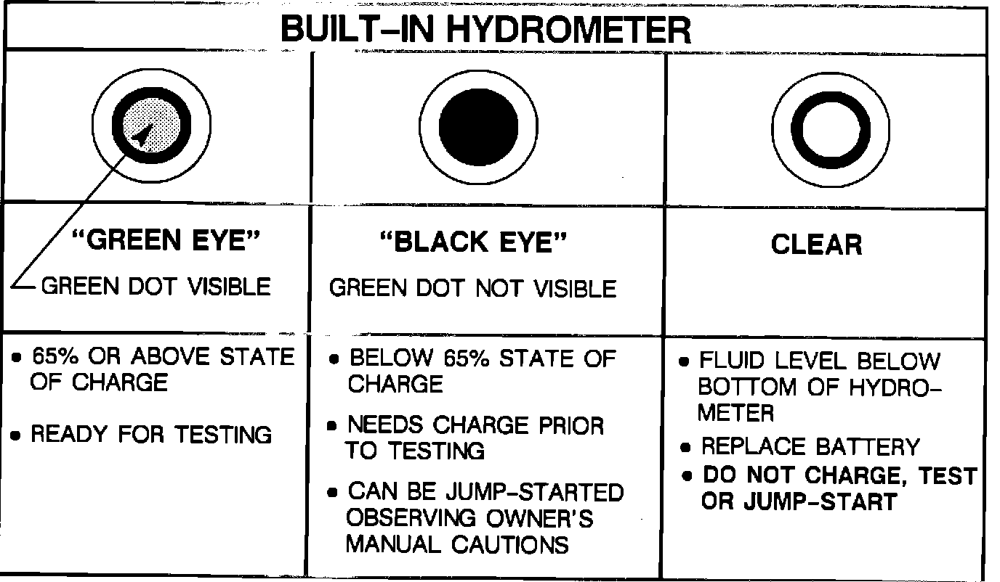

III. Testing the Battery
A. Visual TestCheck for obvious damage, such as cracked or broken case or cover that is permitting loss of electrolyte. If obvious damage is noted, replace the battery. Determine the cause of damage and correct as needed. If battery terminals are severely damaged, for instance loose, burned, or broken, replacement of the battery is recommended.
Evidence of small amounts of electrolyte leakage, especially around the vent holes, does not necessarily indicate the battery is defective. The leakage could have been caused by overcharging or tipping of the battery. If a small amount of the electrolyte leakage is detected, the battery should be fully charged OUT OF THE CAR so that any electrolyte that may escape does not damage the bumper filler panels or other components.
FIGURE 3 - BUILT-IN HYDROMETER:

B. Reading Built-In Hydrometer
Look straight down into the built-in hydrometer to observe its reading, clean and use a flashlight if necessary, and tap lightly on top of the hydrometer to dislodge any trapped air bubbles that might prevent a correct reading. Refer to Figure 3.